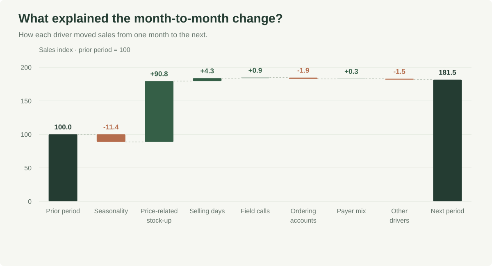
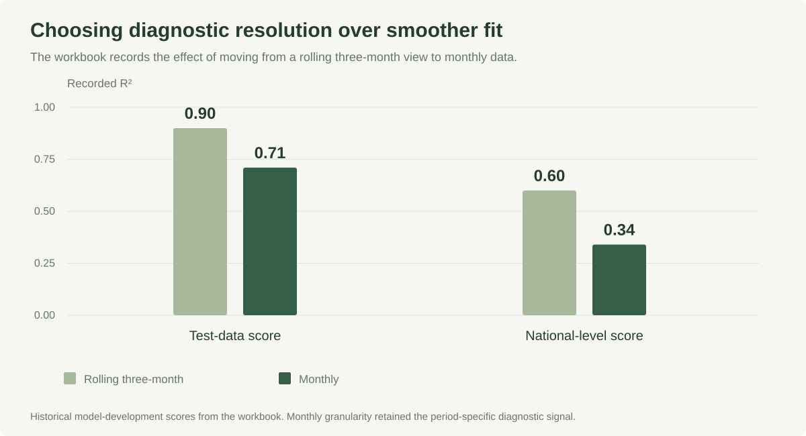
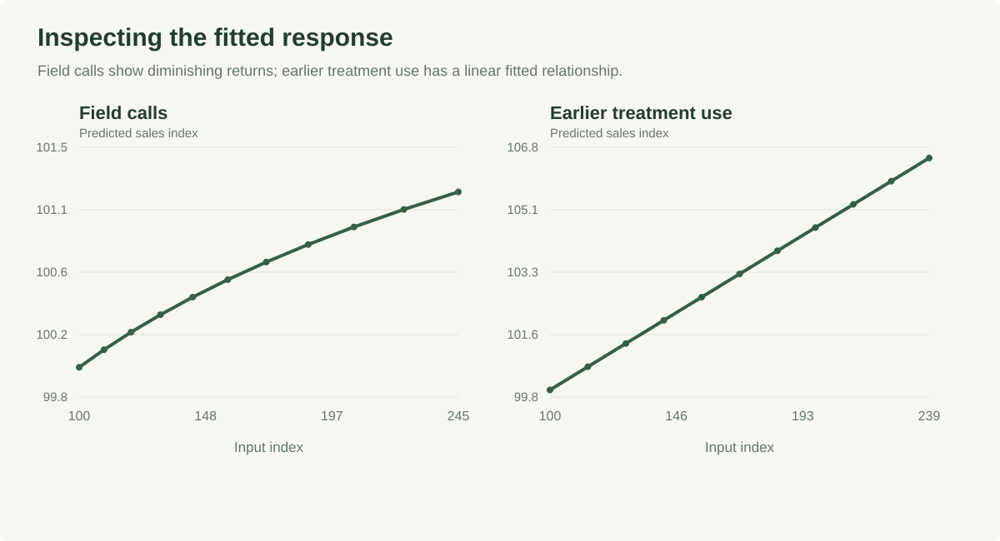

Explaining monthly sales with regression
tl;dr: The brand team kept asking why sales moved from one month to the next. I built a monthly regression that splits each change into drivers like seasonality, field calls and a stock-up before a price change. A rolling three-month model fit better, but I kept monthly because it answered the question the team was actually asking.

The problem
For an established specialty-care brand, the recurring question was why sales moved compared with last month or the same month last year. I worked on the driver model and on explaining its output to the commercial team.
What I built
A monthly regression on the drivers the business cared about: selling days, payer mix, lagged demand, ordering accounts, earlier treatment use, field calls, seasonality and a stock-up effect around an announced price change. The stock-up term kept a spike before the price change from being read as real demand growth.
The key choice

A rolling three-month version scored higher (test R² of 0.90 against 0.71), but it smoothed away the month-to-month changes the team needed explained. I chose monthly. Coefficients stayed fixed between refreshes so months stayed comparable, with quarterly re-estimation and an annual review of the variables.
How it was used
Each month the team got a waterfall splitting the change into driver contributions, scenario views that moved one input with the rest held fixed and response curves like the one below. In the fitted model, field calls show diminishing returns.

Limits
This is correlational attribution. Demand can drive calls as much as calls drive demand, so before a big investment decision I would pair it with an experiment or a quasi-experimental design.